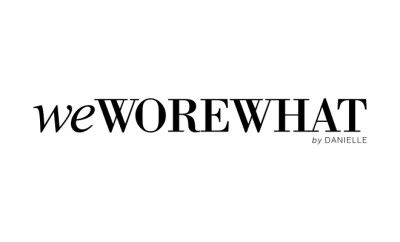
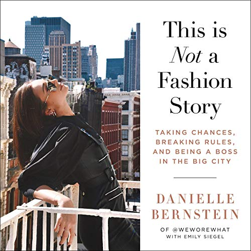

Shop now!
We Wore What is one of those remarkable blogs that have found success as an online shop. Founder Danielle Bernstein started We Wore What in 2010 while still a student in New York City. A self-taught photographer, she started with photographing street fashion in her campus. Eventually, the blog evolved into something more personal, and Danielle’s career as a fashion influencer began. She has since written a New York Times bestseller entitled “This Is Not a Fashion Story,” and was cited by Forbes in their 30 Under 30 list before the age of 25. Although it has transformed into an online store, We Wore What has not abandoned its roots and is still active as a fashion blog. Danielle and her team posts about the latest style trends, gift guides, and other accessories.

